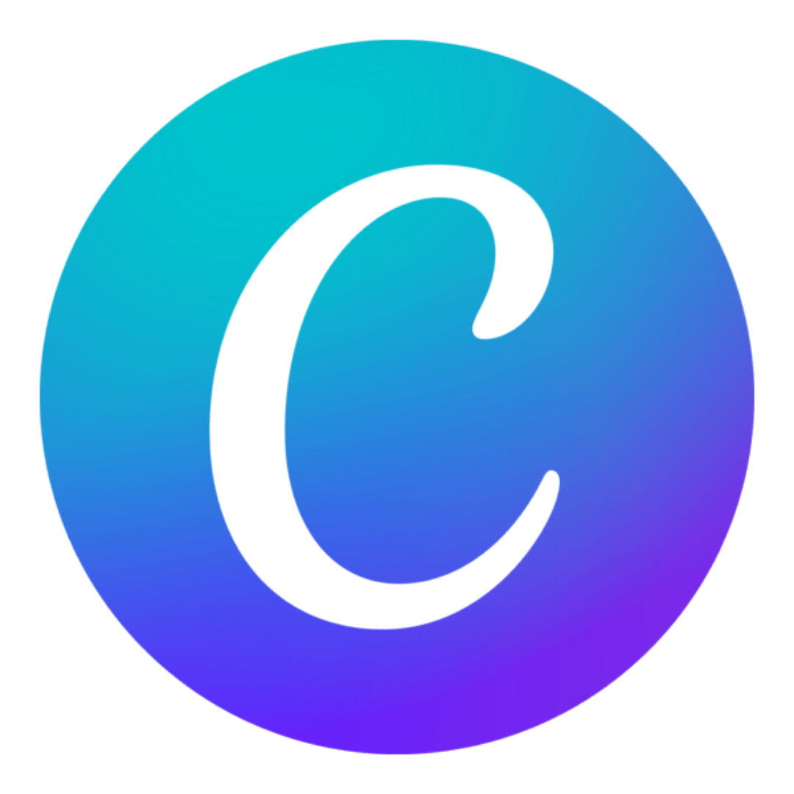
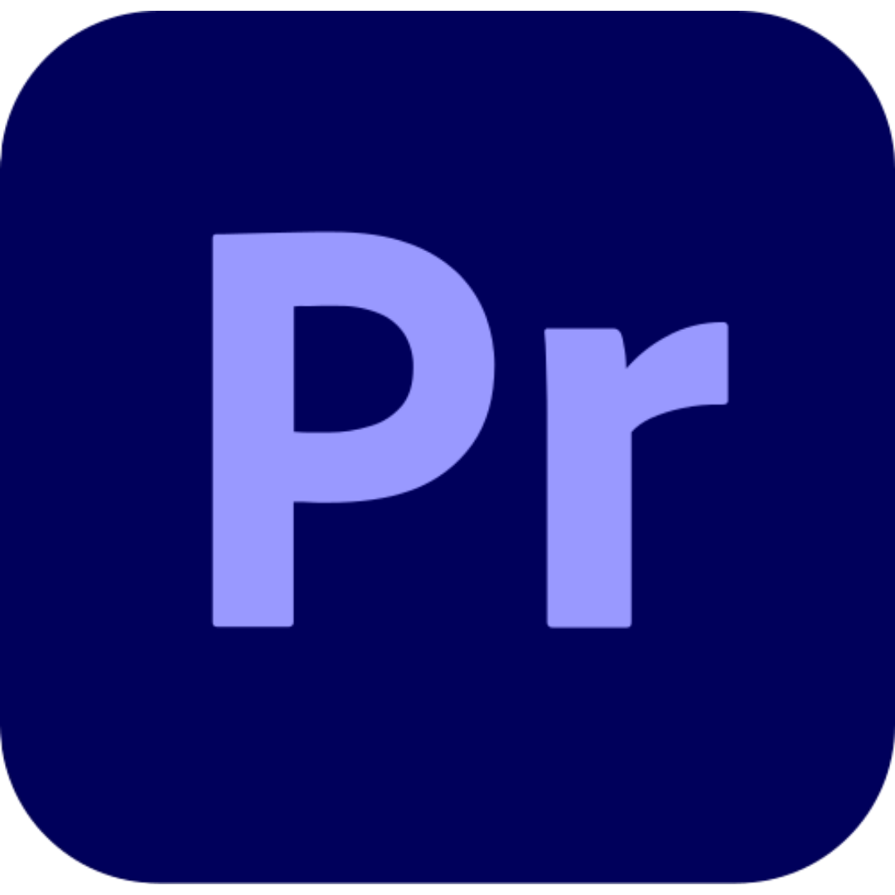
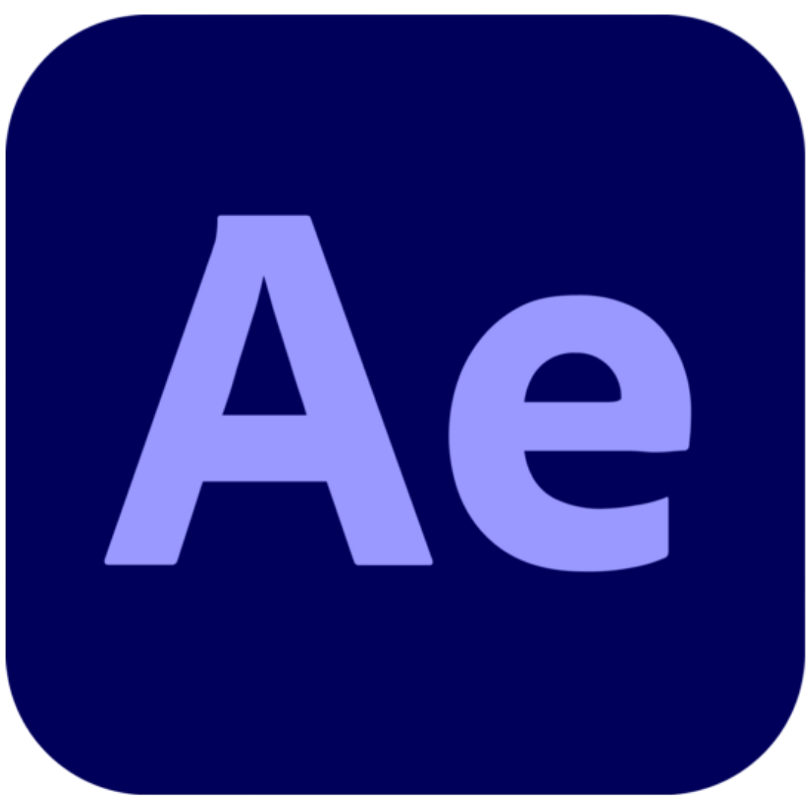
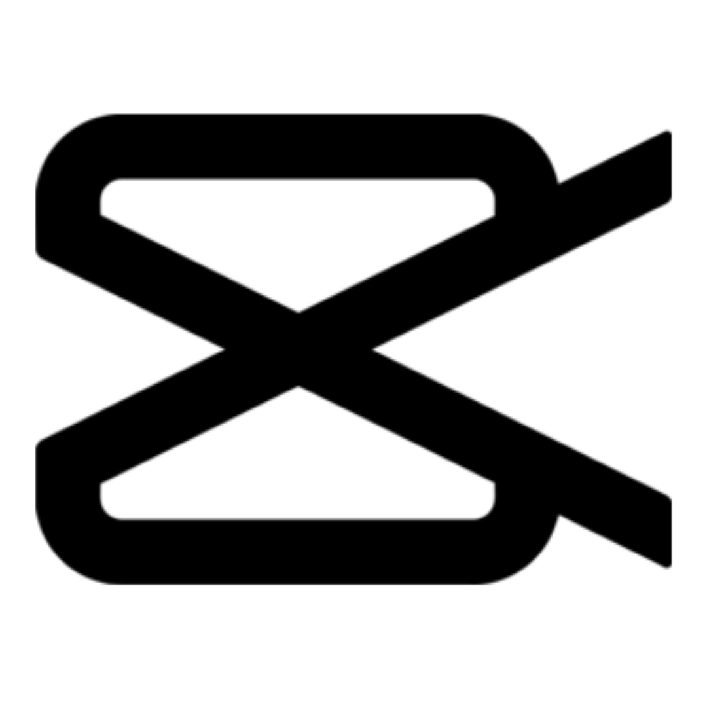

Muhammad Yuan
Kundalini Isma Putra
Saya adalah individu yang mampu bekerja secara fleksibel, baik dalam suasana santai maupun profesional, dengan kemampuan berpikir kritis, senang berdiskusi, serta mampu berkomunikasi secara efektif dalam tim maupun individu. Saya terbiasa mengambil inisiatif dalam berbagai kegiatan positif, serta memiliki keterampilan di bidang desain grafis, editing, dan pengambilan gambar. Selain itu, saya berpengalaman dalam mengoordinasi kepanitiaan dengan baik, didukung oleh kemampuan manajemen dan organisasi yang terstruktur, serta berkomitmen untuk terus berkembang dan berkontribusi secara maksimal dalam setiap kesempatan yang diberikan.

Contact
- Klaten, Jawa Tengah
- +62 812 2574 7072
- muhammadyuanisma@gmail.com
- @pesanmacamapaini
ABOUT ME
ABOUT ME
ABOUT ME
Data Diri
-
TTL : Klaten, 1 Juli 2009
-
Status : Pelajar
-
Asal Sekolah : SMAIT Ibnu Abbas Klaten
Technical Skills
Soft Skills
- Kepemimpinan
- Problem Solving
- Kerja Sama & Tim
- Komunikasi
- Inisiatif
- Berpikir Kritis
Hard Skills
- Manajemen Acara
- Produksi Konten
- Videography
- Basic Design
- Editing Foto & Video
Organisasi
- Staff Departemen Media dan Jurnalistik OSIA Masa Jihad 2025-2026
- Staff Divisi Media Trayodasa - Angkatan 13 SMA IT Ibnu Abbas Klaten (2024-sekarang)
- Koordinator Science Club SMPIT Ibnu Abbas Klaten
Kepanitiaan
- Bendahara Lailatul Wada' (2024)
- Bendahara Stage of Talent 12 (2024)
- Ketua Divisi Media Kegiatan HUT RI-80 (2025)
- Ketua Divisi Media SIAGAMES XIII (2025)
- Ketua Divisi Media Bakti Sosial Trayodasa (2026)
- Staff Divisi Media Ibaska Ramadhan Festival (2026)
- Ketua Divisi Media Bakti Sosial OSIA (2026)
- Ketua Divisi Media Kajian Remaja Islam (2026)
Software Skills




Hobby & Ketertarikan
- Videography
- Photography
- Kontribusi Sosial
- Informasi dan Teknologi
- Coding